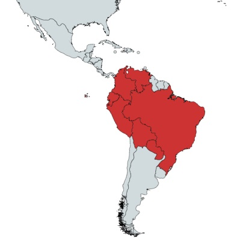

En las regiones tropicales y húmedas de todo el mundo podemos encontrar
plantas impresionantes, como la ceiba. Este imponente árbol puede
alcanzar una altura de hasta 10 metros y un grosor de tronco
de hasta 4 metros en su base.
Son muy queridos en los jardines, ya que tienen flores realmente decorativas.
La Ceiba es un género botánico de árboles originarios de Centroamérica. Pertenece a la familia Malvaceae. La mayoría de las especies son de hoja caduca. Las flores aparecen antes de que el árbol se quede sin sus partes foliares, y son polinizadas habitualmente por murciélagos o colibiríes. El fruto es una cápsula en cuyo interior se encuentran las semillas, que son redondeadas y están envueltas en una fibra algodonosa.
Usos Medicinales:
Contra-indicaciones:
No se encontraron contra-indicaciones.
